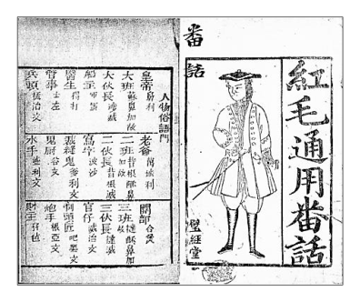
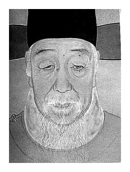
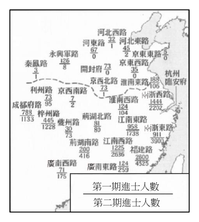
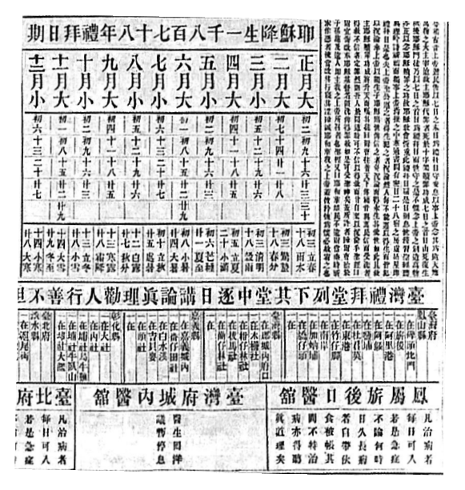

開卷有益 ／
分科測驗 ／ 歷史 ／ 112 年112 年分科測驗歷史試題與答案
這一頁是民國 112 年分科測驗歷史的整份歷屆試題，共 46 題，題目與標準答案出自大考中心 分科測驗歷年試題（依著作權法 §9，考試試題不受著作權保護），其中 46 題附有詳解。以下逐題列出題幹、選項與答案；要計時作答或記錄成績，請用線上練習。
大學入學考試中心原始場次代碼：分科歷史
線上作答這一科 →
全部 46 題
第 1 題
新北市金瓜石的國際終戰和平紀念園區,立有一面紀念牆,上面刻有第二次世界大戰時拘
留在此的盟軍戰俘姓名與國籍。這些戰俘中,許多是紐西蘭及加拿大軍人。他們的國家並
未遭到日軍攻擊,卻仍參戰,其原因為何?
（A） 受雇到海外作戰的傭兵（B） 由大英國協動員的軍隊（C） 反法西斯主義的志願軍（D） 聯合國維和部隊的成員答案：（B）
詳解與考點 正解：題幹特別指出紐西蘭與加拿大沒有遭日軍直接攻擊卻仍參戰，判準在兩國與英國的共同政治軍事體系。兩國身為大英國協成員，基於與英國的政治軍事連結加入同一陣營，因此戰俘會出現在日軍拘留地，故選 B。
A：傭兵是受私人契約雇用的戰鬥人員；題幹所指的是具有國家身分的軍人，不能以傭兵解釋。
C：反法西斯立場可說明部分個人志願者的動機，但不足以說明兩國軍人以國家軍隊身分參戰。
D：聯合國維和部隊是戰後國際組織架構下的任務，與第二次世界大戰中的交戰與戰俘情境不符。
本題考點：大英國協（British Commonwealth）——判斷自治領參戰時，要看其與英國的政治軍事連結；第二次世界大戰（World War II）——戰俘國籍可反映交戰陣營而非僅反映本土是否受攻擊。
第 2 題
一部古代地理書描述某項大型公共工程:「西通河洛,南達江淮」,而中國東南地區「運漕
商旅,往來不絕」。現代學者引此來論證交通建設對國家之盛衰,地方之開發與民生之調
濟等,發揮莫大作用。上述地理書所指公共工程應是:
（A） 秦漢的馳道（B） 隋唐的運河（C） 宋元的港埠（D） 明清的驛站答案：（B）
詳解與考點 正解：「西通河洛，南達江淮」指出一條連結北方核心區與江淮水系的水路；「運漕商旅，往來不絕」又明示漕運與商業航行。能同時支撐國家運輸、地方開發與民生調濟的大型公共工程，就是隋唐運河，故選 B。
A：馳道是以陸路交通為主，不能由「運漕」與江淮水路直接推得。
C：港埠是海河交會的商業設施，不是材料所描述貫通河洛與江淮的長距離運河工程。
D：驛站服務公文與人員傳遞，不能解釋大規模漕糧和商旅持續往來的水運情境。
本題考點：隋唐運河（Grand Canal）——看到河洛、江淮與漕運同時出現，要連結南北水路交通；漕運（grain transport）——判斷交通工程功能時，要區分國家糧運、商業航行與郵驛傳遞。
第 3 題
1604年,義大利籍耶穌會士諾比利抵達南亞某國。在傳教過程中,他打扮成當地苦行僧的
模樣,仿效其舉止。他學會一些當地語言,並以之撰寫書籍來詮釋基督教。他盡可能尊重
當地風俗,允許保留當地社會的習慣,如:束髮、裹紗、額記、淨禮等。諾比利這些作為
最可能的目的為何?
（A） 執行羅馬教廷的傳教指示（B） 利用當地信仰詮釋基督教（C） 嚮往當地社會的風俗習慣（D） 吸收信徒的一種適應措施答案：（D）
詳解與考點 正解：諾比利改穿當地苦行僧服飾、學習語言、以當地語言寫作，並容許保留若干習俗，這些都是降低文化隔閡的傳教安排。其直接目的是讓基督教較能被南亞社會理解與接受，藉此吸收信徒，故選 D。
A：材料沒有指出這些具體做法是羅馬教廷的命令；能從材料判定的是他依當地情境調整傳教方式。
B：使用當地語言與尊重習俗，不等於把當地信仰當作基督教教義的解釋架構。分辨關鍵在他調整的是傳播形式與生活習慣。
C：對風俗的保留在材料中是傳教策略的一環，沒有顯示他出於個人嚮往而採納這些習慣。
本題考點：適應式傳教（accommodation）——傳教者改用在地語言、服飾或可相容習俗時，先判斷是否為降低傳播障礙；文化轉譯（cultural translation）——形式上的在地化不必然改變宗教核心教義；傳教與皈依（mission and conversion）——題目問目的時，要由一連串接近在地社會的行動推回吸收信徒的功能。
第 4 題
一部中國醫學史的作者說明其撰書動機:本書目的在宣揚文化、提倡科學、整理國故、復
興民族;由神祇的醫學進而為實驗的醫學,由玄學的醫學進而為科學的醫學。依據上述,
可以推斷這部書最早的寫作年代可能在:
（A） 1860年代,自強運動時期（B） 1900年代,戊戌變法之後（C） 1930年代,五四運動之後（D） 1960年代,文化大革命時答案：（C）
詳解與考點 正解：書中同時提出「提倡科學」「整理國故」「復興民族」，又以實驗醫學取代神祇與玄學的醫學，反映五四運動後以科學檢視傳統、又重新整理文化遺產的思想語彙。四個選項中最早能同時容納這組語彙的時期是 1930 年代，故選 C。
A：自強運動著重引進西方技術以強化國力，尚未形成材料所呈現的「科學」與「整理國故」並置的思潮。
B：戊戌變法後雖有改革訴求，但題幹的文化整理、科學化與民族復興組合更符合五四之後的知識界脈絡。
D：文化大革命時期批判舊文化的政治氣氛，與材料主張整理國故、復興民族文化的方向不合，而且不是最早可能的年代。
本題考點：新文化運動（New Culture Movement）——看到科學、反玄學與文化整理並置時，可連結五四後的知識思潮；歷史語彙定位（intellectual vocabulary）——用一組概念的共同出現判斷年代，比只抓單一詞語可靠；近代民族復興（national revival）——談復興民族時，要再看它結合的是技術自強、政治改革或科學化的文化論述。
第 5 題
清代臺灣不同祖籍的移民之間常有對立,但有學者認為清中葉以後,臺灣鄉村的「某種場
所」負擔起整合鄉莊社會的任務,使臺灣漢人社會從傳統的祖籍分類意識中解放出來,在
新的移民環境建立新的社會秩序。以下哪種場所符合這位學者的主張?
（A） 寺廟,移民透過共同信仰彼此認同（B） 縣衙,移民透過司法形成公民社會（C） 會館,移民透過同鄉組織互助合作（D） 書院,透過國民教育形成國家認同答案：（A）
詳解與考點 正解：題幹要找的是能跨越祖籍界線、整合鄉村移民的場所。寺廟以共同祭祀、廟會與地方公共事務把同一生活圈的人連結起來，認同基礎由原鄉轉向在地社群，最符合這個功能，故選 A。
B：縣衙是官府處理行政與司法的場所，並非由鄉村居民共同參與、日常整合移民關係的地方組織。
C：會館提供同鄉互助，看似能形成社會連結；但它正是依祖籍建立的組織，無法解釋題幹所說從祖籍分類意識中解放。
D：書院主要服務教育與士紳文化，清代也不是以普遍國民教育塑造國家認同的制度，和題幹的鄉村整合功能不同。
本題考點：地方社會（local society）——移民社會的整合場所要看它是否讓不同來源居民共同參與；祖籍與地域連結（native-place and territorial ties）——會館強化同鄉，寺廟可把認同轉向共同居住的地域；寺廟組織（temple-centered community）——祭祀與廟會若同時連結公共事務，常是地方社會協調秩序的機制。
第 6 題
右圖是1835年某地出版的一本語言教材,收錄有372個常用詞條,大多數來自英語,少數
來自葡萄牙語、瑞典語、馬來語和印度語。這本書最可能
是供何地的商人學習外語之用?

（A） 淡水（B） 上海（C） 廣州（D） 廈門答案：（C）
詳解與考點 正解：關鍵是1835 年尚在鴉片戰爭前，清朝對西方商人的正式貿易仍高度集中於廣州。教材收錄大量英語詞、並混有其他海上貿易常見語言，反映商人處理跨國交易的需要；在當時的制度與港口條件下，最可能供廣州商人使用，故選 C。
A：淡水在19 世紀中葉通商後才成為重要開港地，與1835 年的時間點不合。
B：上海是在鴉片戰爭後開放為通商口岸，不能用來解釋戰前出版的此類商業語言教材。
D：廈門同樣是在條約通商體制形成後才對外開放；以1835 年為判準，廣州才是最符合的地點。
本題考點：廣州體制（Canton System）——遇到鴉片戰爭前的中外商貿題，先判斷對外貿易是否集中於廣州；條約口岸（treaty ports）——上海、廈門、淡水等地若與通商相關，要再核對其開放時間是否已晚於題目年代。
第 7 題
以下是一段有關古代希臘宗教的敘述:希臘人崇拜眾多神祇,他們向神尋求支持與忠告。
為了獲得諸神庇佑,他們經常以動物或農產品來祭祀,深信「我敬獻神,神也會回報予我」。
另一方面,宗教和城邦的政治生活息息相關,城邦許多節慶源自宗教習俗,而參與祭祀活
動強化了公民對城邦的認同感。根據前述,古希臘宗教的特色為:
（A） 兼具公共性和功利性（B） 強調單一神祇的信仰（C） 具有嚴密的宗教組織（D） 以個人的救贖為目的答案：（A）
詳解與考點 正解：材料一面說希臘人以祭品換取神的庇佑與回報，顯示宗教具有求取現世利益的功利性；另一面說祭祀與節慶連結城邦政治並強化公民認同，顯示它具有公共性，故選 A。
B：題幹明說希臘人崇拜眾多神祇，與強調單一神祇的信仰相反。
C：材料呈現的是城邦祭祀與節慶的公共生活，不能據此推成有統一且嚴密的宗教組織；希臘各城邦的宗教實踐並非由單一教會統轄。
D：祭祀的目的在獲得神的支持與城邦認同，並非以個人死後救贖為宗教核心。
本題考點：城邦宗教（polis religion）——宗教儀式若與節慶、政治生活與公民身分相連，要判斷其公共性；互惠祭祀（reciprocal sacrifice）——以供物換取神祇庇佑時，重點是現世的交換期待；多神論（polytheism）——眾多神祇各有功能時，不能誤判為一神教。
第 8 題
十八世紀末期,有些英國消費者在了解自己可能成為跨大西洋奴隸貿易的幫兇後,發起抵
制購買某種商品的運動,間接成為廢除奴隸買賣的推手。這項商品最可能是:
（A） 稻米（B） 茶葉（C） 香料（D） 蔗糖答案：（D）
詳解與考點 正解：題幹指向十八世紀末英國消費者因跨大西洋奴隸貿易而發起的抵制運動。加勒比海蔗糖種植園大量使用被奴役勞動者，蔗糖因而成為消費者可藉由拒買來表達反奴隸立場的代表商品，故選 D。
A：稻米也可能出現在種植園經濟中，但材料所指的英國大眾反奴隸消費運動並非以稻米為主要象徵商品。
B：茶葉主要連結亞洲貿易與英國的消費文化，不能直接對應跨大西洋種植園奴役勞動的問題。
C：香料的貿易重心在亞洲海上貿易，與題幹所說的跨大西洋奴隸制度關聯較弱。
本題考點：跨大西洋奴隸貿易（transatlantic slave trade）——看到英國消費抵制與奴隸制度相連時，要聯想西印度群島的種植園商品；消費者抵制（consumer boycott）——判斷商品時，要找一般消費者能以購買行為施壓的對象；種植園經濟（plantation economy）——大規模單一作物與奴役勞動相連時，要區分其主要生產地與貿易網絡。
第 9 題
某一時期,臺灣總督府實施「輸出入品等臨時措置法」,進行統一管理貿易;其後,為實現
「生產力擴充五年計畫」,又嚴格管制臺灣的鋼鐵、機械、輕金屬等的製造、販賣。臺灣總
督府祭出這些政策的主要目的應是:
（A） 防止臺灣人的武裝抗日活動,減少其武器供應（B） 避免臺灣工業化後與日本競爭,故控制其生產（C） 因應中日戰爭爆發,實施戰時體制的物資管制（D） 致力臺灣資本主義的開發,促進殖民地現代化答案：（C）
詳解與考點 正解：統一管理輸出入、嚴格管制鋼鐵、機械與輕金屬，都是把貿易與戰略性工業納入國家統制的作法；又題幹直接提到生產力擴充五年計畫。這些措施是因應中日戰爭後的戰時動員，而非一般的殖民地經濟開發，故選 C。
A：若主要為防止武裝抗日，管制重點會直接落在武器與治安；題幹卻涵蓋整體貿易及多種工業物資。
B：擴充生產力需要運用臺灣的工業能力以服務戰時需求，不是為了避免臺灣工業與日本競爭。
D：殖民地現代化或資本主義開發可能伴隨某些建設，但嚴格統一管制的直接目的在戰時資源配置，分辨關鍵在「戰時體制」而非單純開發。
本題考點：戰時統制（wartime control）——貿易、原料與戰略工業同時受管制時，要從戰爭動員判讀政策目的；殖民經濟（colonial economy）——殖民地的產能可能被納入宗主國需求，不能只以在地現代化解釋；中日戰爭（Second Sino-Japanese War）——題幹出現擴充生產與統制時，要連結戰事造成的資源調度。
第 10 題
右圖是一幅明末的人像畫。這派畫家描繪人物的面容,個個躍然紙上,性格突出,儀態逼
真。他們對疏朗鬚髮的處理,面痣、雀斑質感的描繪刻畫入微;對老
人的龍鍾老態、雞皮鶴髮,更描寫得栩栩如生。這種畫法和傳統文人
畫以簡單寫意和勾勒線條為主的特色不同。這種轉變形成的背景為
何?

（A） 考證學風興起,講求實事求是（B） 命相風氣流行,重視面容細節（C） 商業社會出現,瀰漫現實精神（D） 西洋畫風影響,展現寫實技巧答案：（D）
詳解與考點 正解：題幹強調面痣、雀斑、鬚髮與老人皮膚質感都被細緻描繪，這種重視立體感與個別外貌的寫實技法，正與傳統文人畫的簡筆寫意不同。明末接觸到的西洋繪畫技術提供了肖像畫寫實表現的新方法，因此最能解釋此轉變的是西洋畫風影響，故選 D。
A：考證學風重點在文獻、器物與制度的求證，不能直接說明肖像畫如何形成細膩的光影、皮膚與面部質感。
B：命相風氣即使重視面容，也只能解釋觀看面相的需求，無法解釋畫家採用有別於寫意傳統的寫實技術。它看似貼近「面容細節」，但題幹問的是畫法轉變的背景。
C：商業社會可擴大肖像與市民文化的需求，卻不足以單獨說明精細寫實技法從何而來；題幹所列的技術特徵更直接指向西洋畫法的影響。
本題考點：西學東漸（Western learning transmission）——明末若材料同時出現新式寫實、肖像細節與傳統畫風差異，可從西洋藝術技術的傳入判讀；藝術史料判讀（art-historical source analysis）——先抓畫面技法的具體描述，再對應能產生該技法的文化接觸，而非只看題材。
第 11 題
1980年代香港發展為重要金融及證券交易中心,證券經紀人、保險掮客、商人與銀行家在
此聚集。他們十分活躍,與世界各地聯繫密切,討論匯率、指數等問題。這種情況與下列
何者最相關?
（A） 中國改革開放,需透過香港取得資金（B） 倫敦經濟蕭條,金融中心轉移至香港（C） 九七大限將至,英國政府欲改造香港（D） 美中關係緊張,商人將資金撤往香港答案：（A）
詳解與考點 正解：材料的關鍵是 1980 年代香港聚集金融從業者，且與世界各地密切聯繫、討論匯率與指數。中國改革開放後，需要利用香港既有的國際金融網絡取得資金與商業連結，正能說明這種金融中心活動的擴張，故選 A。
B：材料沒有指出倫敦金融功能因經濟蕭條而轉移；香港的活躍更符合其作為連接中國與國際資本的節點。
C：九七大限涉及主權移交前景，但不能直接解釋金融專業人士因資金需求而聚集、連結全球市場。
D：美中關係緊張與商人撤資的說法，沒有對應材料所呈現的改革開放資金流動與金融服務需求。
本題考點：改革開放（Reform and Opening-up）——辨識其影響時，注意資金、貿易與國際金融網絡的連動；金融中心（financial centre）——匯率、指數與金融中介人高度集中，反映跨境資本活動。
第 12 題
歷史課堂上,老師要求學生以「某一場衝突」為主題作報告,學生根據探究主題找到兩則
資料,都是淡水英國領事館周知在臺英國僑民的通告:
通告一:清朝官員同意重開基隆煤務局,但該官員表示,依目前基隆的情勢,可能無法立
即開始採礦作業。
通告二:本館頃接臺北同知諭令,希望勒束英僑,暫時勿到鄉下旅行,以策安全。
從兩則資料內容判斷,「某一場衝突」最可能是指:
（A） 鴉片戰爭（B） 英法聯軍（C） 中法戰爭（D） 甲午戰爭答案：（C）
詳解與考點 正解：兩則通告都把焦點放在基隆與臺北周邊的安全情勢：煤務局無法立即採礦，英僑也被要求暫勿到鄉下旅行。這些具體線索顯示北臺灣正受法軍軍事行動與戰事波及，最符合中法戰爭，故選 C。
A：鴉片戰爭的主要衝突脈絡不在題幹所呈現的基隆戰區與臺北地方治安警示。
B：英法聯軍的衝突重心不對應通告中基隆採礦受阻、英國領事館警示英僑的北臺灣情境。
D：甲午戰爭的交戰對象與題幹指向的法軍威脅不同，不能由這兩則通告推得。
本題考點：史料定位（source contextualization）——地點、行政機關與安全警告要合併判讀，不可只看「英國」一詞；中法戰爭（Sino-French War）——基隆與北臺灣戰事是辨識此衝突的重要材料線索。
第 13 題
學者描述某地區的歷史與人口結構發展:該地見證了華人的快速遷入。華人不見得都在礦
場或都市生活,許多人種稻、種菜,或者經營小橡膠園。外來人中還有來自印度與斯里蘭
卡的勞工,他們或為契約工人,或者擔任公務人員;也有來自蘇門答臘與爪哇的移民,但
比不上華人與印度人的增加。依據你的歷史知識,某地區最可能是:
（A） 馬來半島（B） 澳大利亞（C） 美國加州（D） 非洲東部答案：（A）
詳解與考點 正解：材料同時出現華人移入、礦場與都市、稻作蔬菜、小橡膠園，以及印度與斯里蘭卡勞工和蘇門答臘、爪哇移民。這種以華人與印度人增加最顯著、兼具採礦與橡膠經濟的多族群人口結構，最符合馬來半島，故選 A。
B：澳大利亞雖可見華人移民，但材料中的印度、斯里蘭卡勞工、蘇門答臘與爪哇移民及橡膠小園的組合不相符。
C：美國加州的移民與產業結構無法同時對應馬來群島移民、印度勞工與橡膠經濟這些線索。
D：非洲東部雖有印度人移入的情況，但題幹所列華人、馬來群島移民與橡膠園的完整組合不吻合。
本題考點：移民社會（migrant society）——判斷地區時要將來源地、職業與人口比例一起比對；殖民經濟（colonial economy）——礦業與橡膠種植常會帶動跨區勞工與商人的移動。
第 14 題
一位歷史家討論第二次世界大戰對英國女權的影響:這次戰爭的經驗,證明女性在工作上
取代男性是完全可能,現代科技使得純粹運用體力從事工業方面的工作,不像過去那麼重
要。在此脈絡下,這位史家指出:如果說,第一次世界大戰結束時,婦女獲得權利的象徵
是 (甲) 。那麼,第二次世界大戰後,婦女爭取權利的象徵乃是 (乙) 。
（A） 甲:投票權;乙:同工同酬權（B） 甲:離婚權;乙:子女撫養權（C） 甲:墮胎權;乙:身體自主權（D） 甲:工作權;乙:婦女參政權答案：（A）
詳解與考點 正解：材料把兩次世界大戰後的女性權利分別連到政治參與與勞動平等。第一次世界大戰結束後，婦女取得投票權最能象徵公民政治權利的擴張；第二次世界大戰顯示女性能勝任原由男性承擔的工作，因而同工同酬權最能對應職場平等的訴求，故選 A。
B：離婚與子女撫養涉及家庭法上的權利，但材料著重的是戰爭、工作與女性替代男性勞動的能力。
C：墮胎權與身體自主權屬生育與身體決定議題，並非材料用工業工作與科技變遷所建立的比較。
D：工作權較能對應女性進入勞動市場的問題；題幹已把第一次世界大戰後的象徵指向政治權利，選項將兩階段倒置。
本題考點：婦女參政權（women's suffrage）——政治權利擴張常以投票資格作為辨識指標；同工同酬（equal pay for equal work）——比較工作能力與報酬時，判準在相同工作是否得到平等薪資。
第 15 題
神農是古代中國傳說中的三皇五帝之一,中國人奉為農神及藥神。十二世紀以後,神農信
仰隨商人、移民傳至日本,並在十七到十九世紀的德川時代達到高峰。神農受到醫師、藥
商、儒者的崇信,以及幕府將軍、地方藩主的支持,甚至被日本社會視為神道神祇與佛教
菩薩的化身。以下哪一論述最適合說明上述的歷史變遷?
（A） 文化對立與衝突（B） 文化互動與轉化（C） 文化壓迫與接納（D） 文化殖民與反饋答案：（B）
詳解與考點 正解：神農信仰由商人與移民傳入日本後，受到醫師、藥商、儒者與政治權力支持，並被理解為神道神祇與佛教菩薩的化身。材料呈現的不是原樣移植，而是外來信仰進入新社會後與既有宗教及群體重新結合，因此屬文化互動與轉化，故選 B。
A：材料沒有描述兩種文化彼此排斥或衝突，反而顯示多個群體共同崇信。
C：文化壓迫與接納著重一方強制另一方服從；題幹的重點是信仰被重新詮釋與多元支持。
D：文化殖民通常涉及政治支配下的文化輸入；材料所示的傳播途徑與神佛融合，較能用互動轉化說明。
本題考點：文化互動（cultural interaction）——追蹤信仰跨地域傳播時，要看傳播者、接受者與在地詮釋；宗教融合（religious syncretism）——同一信仰被連結為不同傳統的神祇或菩薩，反映意義的轉化。
第 16 題
一份明代中期江蘇的資料描述:湖鄉土地低窪,鄉人大多棄農而漁。譚姓兄弟填土耕作,
田地旁邊沿路種桃李果樹、汙澤地則種荸薺出售。他們購買數百個池塘養魚,池邊又養雞,
魚吃雞糞,長得肥美,待價而沽。譚家日漸富裕。這份資料可用於何種主題的研究?
（A） 明代農村經濟與生態環境（B） 明代外來物種與移入擴散（C） 明代農民合作組織的調整（D） 明代土地賦役制度的改革答案：（A）
詳解與考點 正解：資料細寫低窪湖鄉的土地利用：填土耕作、沿路種果樹、汙澤種荸薺、池塘養魚、池邊養雞，並以雞糞餵魚和待價出售。這些內容同時呈現農村生產、商品化與人如何利用水澤環境，最適合研究明代農村經濟與生態環境，故選 A。
B：材料沒有辨識植物或動物來自外地，也沒有交代移入與擴散的過程，不能推論外來物種。
C：譚姓兄弟共同經營是個案的家族行動，沒有組織章程、成員合作或集體調整的資料。
D：文中雖提到田地與富裕，卻未談田賦、役法或國家徵收方式，不能作為賦役改革的直接證據。
本題考點：農村經濟（rural economy）——從作物、養殖與出售方式判斷生產結構；生態循環（ecological cycling）——雞糞餵魚顯示不同生產活動間的物質利用；史料證據範圍（scope of evidence）——資料未提及的制度不可逕行推論。
第 17 題
1554年,一位神聖羅馬帝國特使出使某地,途中報導見聞:「他們沒有時鐘標示時間......
他們有一種報時人員,利用水鐘判斷時間。當天快破曉時,就從一座高塔放聲呼叫,為的
是敦促眾人前來祈禱,大老遠就聽得到。他們在日出和中午間重複這動作,中午再來一遍,
接下來是中午和日落之間,最後日落時再重複一次。」從報導內容判斷,這位特使最可能
是前往何處?
（A） 巴黎（B） 馬德里（C） 威尼斯（D） 君士坦丁堡答案：（D）
詳解與考點 正解：報導描述破曉、日出至中午、中午後、日落等時段反覆由高塔呼叫眾人祈禱，合計五次；這是伊斯蘭禮拜召喚的鮮明線索。1554 年的君士坦丁堡處在鄂圖曼統治下，是能以此城市宗教生活解釋材料的地點，故選 D。
A：巴黎的城市宗教生活不以伊斯蘭教每日五次禮拜召喚作為公共報時的主要線索。
B：馬德里同樣不能由材料中的高塔呼叫與五段禮拜時刻直接對應。
C：威尼斯雖與東方貿易往來密切，但材料描述的是城市內部伊斯蘭禮拜制度，不是海上商業聯繫。
本題考點：伊斯蘭禮拜（Islamic prayer）——五個祈禱時段與高處呼叫是判讀城市宗教生活的線索；鄂圖曼帝國（Ottoman Empire）——遇到近代君士坦丁堡的宗教與政治情境，可連結其鄂圖曼統治背景。
第 18 題
某一時期,國家實施計畫經濟,介入經濟生產、資源分配與民生消費。政府發行各種票券,
以控管各種物資,如糧票、油票、布票、肉票、雞蛋票、鹽票等。消費者必須憑票至國營
商店購買所需貨品。這項政策延續數十年之久,其最可能是:
（A） 太平天國時期,主張財產公有（B） 中日戰爭期間,政府管制物資（C） 政府遷臺初期,實施配給制度（D） 中共政權成立,實行經濟統制答案：（D）
詳解與考點 正解：材料的判準不是單一戰時配給，而是國家實施計畫經濟、控制生產與分配、以各種票券在國營商店購買，並延續數十年。這套廣泛而長期的經濟統制最符合中共政權成立後的制度，故選 D。
A：太平天國雖提出財產公有理念，但材料所述的全國性計畫經濟、票券與國營商店制度不相符。
B：戰爭期間確可能管制物資，但題幹強調的是持續數十年的完整生產、分配與消費控制。
C：政府遷臺初期曾有配給措施，但材料列出的多種票券與長期國營供應體系，較符合中共政權的經濟統制。
本題考點：計畫經濟（planned economy）——生產、資源分配與消費同受國家配置是核心判準；配給制度（rationing system）——票券要與供應管道、控制範圍及持續時間一起判讀。
第 19 題
從六世紀開始,拜占庭帝國境內出現有關「聖像」的爭論。反對聖像者斥之為偶像崇拜,
但支持者卻辯護說,那不是崇拜偶像,而是幫助不識字者了解基督教。然而,破壞聖像的
事例仍到處可見。730年時,拜占庭皇帝下令禁止使用聖像。此舉引發強烈抗議,羅馬教宗
也反對「聖像破壞」法令。我們應如何理解拜占庭帝國的聖像破壞運動?
（A） 拜占庭帝國內,聖像使用爭議始於八世紀中葉（B） 拜占庭支持聖像者從功能性角度為聖像作辯護（C） 拜占庭帝國邀請羅馬教廷,裁斷內部宗教爭議（D） 羅馬教廷贊同偶像崇拜,故反對聖像破壞運動答案：（B）
詳解與考點 正解：材料明說支持聖像者認為聖像可幫助不識字者理解基督教，這正是從功能性角度為聖像辯護；不必額外推測其他立場，故選 B。
A：材料指出相關爭論從六世紀開始，並非始於八世紀中葉。
C：材料只說羅馬教宗反對禁令，沒有指出拜占庭帝國邀請羅馬教廷裁斷內部爭議。
D：反對聖像破壞不等於贊同偶像崇拜；支持者已明確區分聖像的教化功能與偶像崇拜。
本題考點：史料直讀（close reading）——選項若可由材料原句直接支持，優先採用而非延伸臆測；聖像破壞運動（Iconoclasm）——辨析時要區分教化象徵、宗教敬禮與偶像崇拜的不同主張。
第 20 題
某時期一份文書寫道:「百戶為里,五里為鄉,兩京及州縣之郭內分為坊,郊外為村」;「每
里置正一人,掌按比戶口,課植農桑,檢察非違,催驅賦役。在邑居者為坊,別置正一人,
掌坊門管鑰,督察姦非,並免其課役。」此文書的性質最可能是:
（A） 秦漢的田律（B） 隋唐的戶令（C） 宋元的稅法（D） 明清的鄉約答案：（B）
詳解與考點 正解：文書先界定里、鄉、坊、村等居住與行政單位，再規定里正按比戶口、督課農桑、催驅賦役，坊正管理坊門與治安。它規範的是人口編管、居住單位與基層行政職責，性質最符合隋唐的戶令，故選 B。
A：田律重點會放在土地、耕作或田界相關規定，不能完整涵蓋戶口編查、坊門管理與基層人員職掌。
C：稅法可涉及賦役，但材料的核心是里坊編制與戶口管理，不只是課稅計算。
D：鄉約多為地方教化與倫理規範，文書的條列式官制、戶口與賦役職責更像正式行政法令。
本題考點：戶令（household ordinance）——辨識時看是否規範戶口、居住編制與基層管理者；里坊制度（li-fang system）——里、鄉、坊、村的劃分反映城市與鄉村的行政組織；法令文書（legal ordinance）——職掌、編制與賦役被明確列舉時，通常是制度規範而非單純敘事。
第 21 題
二次世界大戰爆發之前,日本已經取得太平洋幾個群島,並設官管理,許多日本人移居該
地。例如原來屬於德國的馬紹爾群島、加洛林群島等。日本取得上述島嶼的背景最可能是:
（A） 日本在牡丹社事件後,持續南進擴張勢力（B） 日俄戰爭後,俄國讓出太平洋的勢力範圍（C） 日本藉參加協約國陣營,占領德國殖民地（D） 日本為建立大東亞共榮圈,出兵南太平洋答案：（C）
詳解與考點 正解：材料點出馬紹爾群島、加洛林群島原屬德國，且日本在第二次世界大戰前已設官並有移民。這要回到第一次世界大戰中日本加入協約國陣營、占領德國在太平洋的殖民地的背景，故選 C。
A：牡丹社事件與日本對臺灣及周邊的擴張有關，不能說明原屬德國的太平洋群島如何轉由日本管理。
B：日俄戰爭涉及俄國勢力，材料明確標示島嶼原屬德國，兩者不相符。
D：大東亞共榮圈是後來的戰時擴張論述；題幹強調的是戰前已取得並治理的德國殖民地。
本題考點：第一次世界大戰（World War I）——殖民地歸屬變化要先辨識原宗主國與參戰陣營；德國殖民地（German colonies）——看到原屬德國的太平洋群島，應連結戰後勢力重分配；時間定位（chronological reasoning）——「二戰前已管理」可排除後起的戰時政策。
第 22 題
一位史家說明:「十九世紀上半葉,普魯士一家最大的兵工廠需花費30年時間,才能生產
足夠的槍支,給當時普魯士陸軍的32萬名士兵使用。到了1860年代,一家法國兵工廠能在
短短四年內便生產出一百萬支槍。」此一變化來自:
（A） 商業革命,兵工廠開拓龐大的槍支貿易市場（B） 軍事革命,兵工廠接受的槍支訂單大量增加（C） 科學革命,兵工廠中對槍支品質的要求提升（D） 工業革命,兵工廠使用規格化機器製造槍支答案：（D）
詳解與考點 正解：題幹把焦點放在兵工廠的生產時間由 30 年縮為 4 年、產量又擴大到百萬支槍，這是製造方式改變的訊號。工業革命把機器、分工與規格化零件帶進工廠，使槍枝能以可重複的流程大量生產，而非主要靠個別工匠製作，故選 D。
A：商業革命著重遠距貿易與市場擴張；市場需求可以增加訂單，卻不能單獨說明同一類兵器的單位生產效率大幅提高。
B：軍事革命涉及軍隊編制、戰術與國家動員的轉變。題幹比較的是工廠的製造速度，關鍵在生產技術與標準化，不是訂單數量。
C：科學革命主要改變近代科學方法與知識觀；「提高品質要求」反而未能解釋短時間內大量增產的原因。
本題考點：工業革命（Industrial Revolution）——看到機器工廠、產量激增與製作時間縮短，要從生產技術判斷；規格化與可互換零件（standardization and interchangeability）——零件可按同一規格製造時，才容易分工、裝配與大量生產；史料因果判讀（historical causal inference）——材料若比較的是效率變化，先找能直接改變效率的因素。
第 23 題
臺灣總督府委託學者編纂某書,內容共計四篇:第一篇〈荷蘭人時代的理蕃政策〉、第二
篇〈西班牙人的對蕃行為〉、第三篇〈鄭氏時代的理蕃措施〉、第四篇〈清政府時代的理蕃
措施〉,其中第四篇內容幾占全書的九成。根據這些篇名判斷,此書編纂的目的最可能是:
（A） 探討漢民族在臺灣開拓的歷史脈絡（B） 分析漢人與臺灣原住民的族群關係（C） 提供殖民政府制訂原住民相關政策（D） 理解臺灣各族群的文化交流與異同答案：（C）
詳解與考點 正解：關鍵在臺灣總督府委託編纂，且全書都以各政權的「理蕃政策」為主題，清政府部分又占近九成。這種把前代治理原住民的作法系統化、特別詳列近期統治經驗的編排，最能服務殖民政府擬定自身政策的需要，故選 C。
A：漢民族在臺灣開拓的歷史會以移墾、開發或聚落發展為核心；四篇篇名都鎖定對原住民的治理措施，重點不同。
B：漢人與原住民的關係確實與「理蕃」相關，但材料突出的是政府如何施政，而非平等分析兩個群體的互動，分辨關鍵在編纂目的的政策取向。
D：文化交流與異同應呈現語言、信仰或生活習俗等材料；題目列出的是不同政權的行政措施，沒有把文化比較當作主軸。
本題考點：殖民知識生產（colonial knowledge production）——殖民政府委託整理前代治理資料時，要連結其服務當前統治的用途；史料編纂目的（purpose of historiography）——判斷目的時同看委託者、篇章比例與反覆出現的主題；原住民政策（indigenous policy）——材料若聚焦「理蕃」措施，先區分它是在談行政治理還是族群文化。
第 24 題
1853年,哈布斯堡王朝的奧地利帝國外長憂心忡忡警告:「根據這個原則來建新國家的主
張,是所有烏托邦計畫中最危險的。」「提出這樣的主張就是要與歷史斷絕關係。在歐洲
任何地區實行,將動搖堅固而有組織的國家秩序之基礎,顛覆和混亂歐洲大陸。」當時,
這位外長擔心的是:
（A） 自由主義（B） 資本主義（C） 浪漫主義（D） 民族主義答案：（D）
詳解與考點 正解：材料憂慮的是依某一原則建立新國家，將使既有的歐洲國家秩序瓦解。1853 年的哈布斯堡帝國包含多個民族，若各民族以自身身分要求建立國家，便會直接威脅帝國的完整；這正是民族主義的政治要求，故選 D。
A：自由主義主要要求憲政、權利與限制權力，雖也會衝擊君主專制，卻不必然以民族身分重新劃定國界、另建國家。
B：資本主義是生產與交換的經濟制度，不能對應材料所說以某個原則建立新國家的政治訴求。
C：浪漫主義是文學、藝術與思想潮流，能滋養民族情感，但材料所指的是以民族為基礎改造國家秩序的政治主張。
本題考點：民族主義（nationalism）——看到民族身分與建立國家的連結，要判為民族國家或民族自決的主張；多民族帝國（multiethnic empire）——統治者面對分離建國要求時，通常憂慮領土與權力結構被拆解；思想與政治訴求的區分（idea and political program）——文化潮流能影響政治，但要依材料問的是文化表現還是具體的建國原則作答。
◎ 1624年荷蘭東印度公司在臺灣建立據點後,每年收益會隨著政治、貿易情勢的變化而有不 同。下表是1636-1652年荷蘭東印度公司的收益變化。
單位:荷蘭盾
年份 貿易收入 領地(稅)收入 總支出 獲利情況
1636-1637 112,844 6,278 168,627 -49,505 1641-1642 109,464 52,887 223,666 -61,315 1646-1647 224,246 135,049 246,687 112,608 1651-1652 429,382 302,181 390,126 341,437
第 25 題
根據上表,1646年前荷蘭東印度公司在臺灣的獲利情況並不理想。當時,東印度公司的經
營遭遇哪個主要問題?
（A） 沿岸缺乏港口的建設（B） 鄭芝龍的商業競爭（C） 島內漢人的強烈反抗（D） 公司本身人力不足答案：（B）
詳解與考點 正解：表中1636～1642年的貿易收入約維持在11萬荷蘭盾，總支出卻高於收入，獲利皆為負；到1646年後貿易收入才明顯增加。這種早期難以掌握海上商路與華人商品流通的處境，主要來自鄭芝龍商業網絡的競爭，故選 B。
A：荷蘭東印度公司在臺灣設立據點的目的正包含經營海上貿易；題目呈現的是貿易收益受抑，不能由此推成沿岸沒有港口建設。
C：島內漢人的反抗會偏向治安、勞力或領地統治問題，表中所問的主要轉折則集中在貿易收入的長期受限，與海上商業競爭較相符。
D：公司人力不足若為主因，理應廣泛限制行政、軍事與生產；題幹的經濟困境較直接連到商路與貿易貨源競爭，而非單一人力問題。
本題考點：荷蘭東印度公司在臺灣的經營（Dutch East India Company in Taiwan）——判讀早期獲利不佳時，要把貿易收入與華人海商網絡的競爭連結；歷史統計表判讀（historical statistical interpretation）——先找哪一欄改變最顯著，再用同時期的政治與經濟條件解釋，而不是把所有可能因素並列。
第 26 題
上表顯示,1646年以後荷蘭東印度公司在臺灣的「貿易收入」大幅增加,最可能與下列何
者有關?
（A） 鹿皮、蔗糖生產（B） 鄭氏集團的合作（C） 海外船隻的關稅（D） 抽收移民人頭稅答案：（A）
詳解與考點 正解：表中貿易收入由1641～1642年的109,464荷蘭盾，增至1646～1647年的224,246荷蘭盾，之後又增至429,382荷蘭盾，顯示公司能取得並外銷更多臺灣產物。鹿皮與蔗糖都是荷蘭東印度公司經營臺灣時的重要商品，其生產與出口擴大最能直接解釋貿易收入上升，故選 A。
B：題目問的是貿易收入大幅增加的經濟來源；鄭氏集團的合作不是表中可直接對應的商品生產與出口機制，也與前期海商競爭的脈絡不同。
C：海外船隻關稅屬對航運或港口活動徵收的收入，較接近領地稅收性質；它看似也與貿易有關，但不能直接等同於表中的商品貿易收入。
D：抽收移民人頭稅是對人口徵收的稅，應歸入領地（稅）收入，不能用來解釋「貿易收入」欄位的成長。
本題考點：殖民地商品貿易（colonial commodity trade）——表中貿易收入上升時，優先找能被生產、收購與外銷的商品，而非地方稅；收入分類（revenue classification）——先區分商品交易收入與關稅、人頭稅等領地稅收，再判斷哪個選項對應表格欄位。
第 27 題
根據圖中不同地區第一期、第二期的進士人數比較,這張
圖反映的朝代是:

（A） 唐（B） 宋（C） 元（D） 清答案：（B）
詳解與考點 正解：題幹把同一朝代分成兩期，並以進士的地域分布作為辨識線索；最能連到宋代人口、經濟與文化重心逐步南移的脈絡。宋代科舉取士規模擴大，南方士人的比重隨之上升，符合以進士地域變化作為時代特徵的判斷，故選 B。
A：唐代雖已實施科舉，但政治與經濟核心仍主要在北方；僅憑科舉存在，無法解釋題目所指兩期地域分布的明顯轉折。
C：元代的取士制度受族群身分與政治安排影響較大，並非以南北經濟重心遷移所造成的進士地域變化為主要特徵。
D：清代進士來源確有地域差異，但題組所要辨識的是南北重心轉移的歷史過程，最典型的對應仍是宋代。
本題考點：科舉制度（imperial examination）——用進士來源判斷時代時，要同時看取士制度與士人集中區；中國經濟重心南移（southward shift of economic center）——看到南北人口、人才或稅賦比重長期改變，可優先連到宋代以後的南移趨勢。
第 28 題
比較圖中第一期和第二期虛線以北、以南的人數差異,可
以發現一個明顯趨勢。依據你的歷史知識,下列哪個概念
最足以解釋此發展趨勢?
（A） 經濟重心的轉移（B） 政府政策的引導（C） 南北風土的差異（D） 科舉制度的改變 第一期進士人數答案：（A）
詳解與考點 正解：關鍵在兩期進士的南北分布不是短期個別政策的結果，而是人才資源隨人口、農業與商業發展而重新集中的長期現象。宋代以來南方開發加深，經濟活動與讀書人群逐漸向南方累積，因此以「經濟重心的轉移」最能解釋題目要求比較的地域趨勢，故選 A。
B：政府政策可能影響某次取士名額或特定地區的教育，但題幹著重的是跨兩期的南北變化，沒有提供足以指向單一政策的線索。
C：風土差異可以說明地方生活條件不同，卻不能說明同一地域在兩個時期的人數比重為何改變；分辨關鍵在時間上的結構變化。
D：科舉制度的改變若是主因，題幹應出現考法、名額或資格規定的線索；本題的判準是地域社會經濟條件的消長。
本題考點：經濟重心轉移（economic center shift）——史料同時呈現南北人口、人才或產出比重變動時，先判斷是否反映長期經濟重心遷移；歷史因果判讀（historical causation）——區分能解釋長期趨勢的結構因素，與只能造成短期波動的政策因素。
第二期進士人數
◎ 美國老羅斯福總統認為歷史是圍繞著海洋而展開的。他曾指出:「甲時代隨著美洲的發 現而告消失,乙時代現在已處於發展頂峰,並將很快耗盡它所能支配的資源,而丙時代 註定將成為所有偉大時代中最偉大的時代,猶如一輪紅日正在噴薄而出。」
第 29 題
題幹文字中,甲、乙、丙時代各應指:
（A） 地中海、太平洋、大西洋（B） 地中海、印度洋、大西洋（C） 地中海、大西洋、太平洋（D） 印度洋、大西洋、太平洋答案：（C）
詳解與考點 正解：材料以「美洲的發現」作為甲時代消失的轉折，又稱乙時代正到達頂峰、丙時代即將崛起。這符合世界海洋活動重心由地中海轉向大西洋，再展望太平洋的判讀順序，故選 C。
A：把乙定為太平洋，混淆了材料中的現在與未來；太平洋是被預告將成為最偉大時代的丙。
B：印度洋曾是重要海上貿易區，但材料把美洲發現後居於發展頂峰的時代指向大西洋，不能置換為印度洋。
D：甲若是印度洋，便無法連結「隨著美洲的發現而告消失」的轉折；這一線索指向以歐洲地中海貿易為中心的舊時代。
本題考點：海洋史觀（maritime history）——材料以海域更替解釋世界史時，要先找改變海上重心的事件；地中海、大西洋與太平洋的順序（Mediterranean–Atlantic–Pacific sequence）——看到美洲發現、當前大西洋與未來太平洋的串連，可依時序判讀；史料時間定位（historical periodization）——「已消失」「正達頂峰」「將崛起」分別是判定三個階段的相對時間詞。
第 30 題
此一觀點影響到美國的外交政策,下列哪一事件最切合上述觀點的歷史發展脈絡?
（A） 實踐門羅主義,禁止歐洲列強干涉美洲事務（B） 發動美西戰爭,打敗西班牙,以取得菲律賓（C） 參與第一次世界大戰,以阻止德國勢力擴大（D） 發動波斯灣戰爭,以控制波斯灣的石油供應
二、多選題(占12分)答案：（B）
詳解與考點 正解：題幹以「歷史圍繞著海洋展開」並把下一個偉大時代指向亞洲，判準是美國從美洲擴張到太平洋、取得亞洲據點的海權政策。美西戰爭後取得菲律賓，正把美國勢力推進西太平洋，最切合這條脈絡，故選 B。
A：門羅主義的重點是排除歐洲列強干預美洲，範圍仍在西半球，沒有展現題幹所指向亞洲的海外擴張。
C：參與第一次世界大戰主要關乎歐洲戰局與德國勢力，並非以取得太平洋據點為核心的海權擴張。
D：波斯灣戰爭的背景是波灣安全與石油供應，時代、區域與政策目的都不同於十九世紀末的太平洋擴張。
本題考點：海權論（sea power）——材料同時出現海洋、資源與新時代時，要看國家是否追求航線、港口與海外據點；美國海外擴張（U.S. overseas expansion）——取得菲律賓等太平洋據點，反映美國由美洲走向亞洲的策略；史料脈絡判讀（historical contextualization）——先把材料中的空間方向與時代目標對上，再比較選項事件。
第 31 題（多選）
1878年,臺南一所教會發行一份〈光緒四年
耶穌聖教堂臺灣禮拜單〉,右圖是其部分內
容。這份禮拜單除了宣揚教義,而受到教會
信徒重視外,還載有其他與日常生活相關
的訊息,因此連非教徒也相當喜愛。根據圖
示內容推斷,下列哪些選項正確?

（A） 這一所教會的傳教士應該是來自加拿大（B） 當時來臺傳教士的傳教常結合醫療行為（C） 教會對漢人與原住民採不同的傳教方式（D） 禮拜單標注二十四節氣是在地化的表現（E） 禮拜單有光緒紀年代表這教會屬於官方答案：（B）（D）
詳解與考點 正解：判準是分開檢驗選項所說的傳教實作、在地化表現與政治身分。近代基督教傳教在臺灣常以醫療服務建立接觸與信任；把二十四節氣這類本地生活曆法納入宗教刊物，則是以既有文化時間語彙溝通的在地化作法，故選 BD。
B：醫療服務能回應病患的日常需要，也能讓傳教士接觸社群，因此傳教與醫療結合是合理的歷史判斷。
D：二十四節氣原本連結農時與生活節奏；將其放入禮拜單，顯示宗教訊息採用了本地讀者熟悉的表述系統。
A：傳教士的國籍不能由禮拜單的內容直接推出；加拿大傳教士在臺活動的事實，也不能逕與題幹中的教會等同。
C：漢人與原住民是否採不同傳教方式，需要對象、語言或組織安排的資料支持；曆法在地化本身不足以推出此一區分。
E：使用光緒紀年是當時通行的紀年方式，用來讓讀者辨識日期，不代表教會屬於官方機構。
本題考點：醫療傳教（medical mission）——判斷近代傳教策略時，看到診療、醫院或衛生服務，要連到宗教與社會服務的結合；文化在地化（localization）——宗教刊物採用本地曆法、語言或生活節奏時，重點是降低溝通門檻，不是改變其組織身分；紀年與政治歸屬——通行紀年可用於各類民間文本，不能單獨推論官方性。
第 32 題（多選）
兩漢時期,人民旅行時必須攜帶通行文件,證明已經完納賦役、未遭法庭傳喚、非屬在逃
罪犯,並交代旅行目的、交通工具。此外,尚須附上登錄旅行者姓名、縣里、爵級、年歲、
身高、所持物品等個人資料。文件先由旅行者所屬里的基層吏員驗證內容,再向鄉的主管
提出申請,鄉再呈報給縣。逐級審核通過後,發給旅行者,由旅行者所經官署一一查驗、
放行。根據這些敘述,漢帝國掌握人口動向仰賴的是:
（A） 分工嚴明的地方行政組織（B） 記錄詳實的官方文件資料（C） 人民對漢帝國的絕對忠誠（D） 廣泛佈建線民網和監視站（E） 依法行政的鄉里基層吏員答案：（A）（B）（E）
詳解與考點 正解：判準不在人民是否忠誠，而在漢帝國如何以可追查的行政程序掌握旅行者。題幹明示里驗證、鄉申請、縣審核，以及沿途官署查驗，並要求文件記錄大量身分資料，因此仰賴的是地方分工、官方文書與基層依既定程序的執行，故選 ABE。
A：里、鄉、縣各有驗證、呈報與審核工作，顯示地方行政層級分工明確，才能讓人口移動逐級被掌握。
B：通行文件載有姓名、居里、爵級、年歲、身高與所持物品等資料，又供沿途查驗，是以詳實文書追蹤人口動向。
E：基層吏員須先依文件內容驗證，再循固定層級送審；這種按既定條件處理的程序，是掌握人口的必要環節。
C：旅行者必須接受查驗，證明國家依制度確認其身分與義務，不能推出人民對帝國具有絕對忠誠。
D：沿途官署查驗屬公開的行政關卡；材料沒有線民蒐報或廣泛監視站的資訊，兩種控制方式不可混同。
本題考點：地方行政（local administration）——看到里、鄉、縣逐級處理，要由層級分工判斷國家治理能力；文書行政（documentary administration）——身分資料、通行文件與沿途核驗同時出現時，表示以記錄追蹤人口流動；移動管制（mobility control）——判斷控制手段時，要區分公開審核程序與秘密監控網絡。
第 33 題（多選）
1127年,低地國根特城的市民向統治者威廉伯爵提出要求:「伯爵大人,如果您想公正對
待您的市民,就不該橫徵暴斂,敵視我們;相反,應保護、善待我們。但您違反法律,違
背誓言,未盡到免除捐稅、維持治安責任,未尊重市民的傳統權利。⋯⋯請您屈尊前往伊
普爾,讓我們雙方貴族、教士和人民代表,和平聚會,慎重考慮,公正裁決。若他們認為
您仍可任伯爵,我們也贊同;如果他們認為您不守法紀和承諾,不適合繼續擔任,就請讓
位,讓我們另尋合適的人選。」伯爵否決市民請求,雙方遂訴諸武力,市民取得最後的勝
利。這個事件反映的中世紀城市內部權力關係為何?
（A） 威廉伯爵與根特市民的權力關係,建立在封建契約上面（B） 根特市民因為威廉伯爵違背其誓言,直接訴之武力解決（C） 根特市民起而捍衛固有特權,主要理據是維護封建傳統（D） 根特市民發展出民主政治,更換統治者乃是其天賦人權（E） 根特市民的作為,是中世紀城市獲取自治權的一種方式答案：（A）（C）（E）
詳解與考點 正解：判準要看根特市民自己提出的正當性來源：伯爵違背誓言、未履行保護與減免捐稅的義務，也未尊重傳統權利；市民並先要求由貴族、教士與人民代表共同裁決。這反映以封建互惠義務與既有特權為據，並藉集體行動爭取城市自治，故選 ACE。
A：市民以伯爵是否履行誓言、保護與減免捐稅義務判斷其能否繼續統治，正是封建關係中權利與義務相互連結的表現。
C：請求書反覆援引傳統權利、法律與誓言，說明市民捍衛的是既有的特權與封建秩序，而非抽象的新權利。
E：市民集體要求審議統治者資格，並在衝突中取得勝利，是城市社群對領主權力提出限制、爭取自治的一種方式。
B：材料的行動順序是先要求和平聚會與裁決，伯爵否決後才訴諸武力，不能說市民直接以武力解決。
D：有人民代表參與不等於已發展民主政治；其論據是身分團體的傳統權利與封建承諾，不是以天賦人權更換統治者。
本題考點：封建契約（feudal contract）——看到誓言、保護與服從的互惠義務時，要由雙方權利義務判斷封建關係；城市自治（urban autonomy）——中世紀市民以集體請求、談判或抗爭限制領主時，可視為自治權的爭取；傳統特權與天賦人權（privilege and natural rights）——前者依身分與既有習慣，後者主張普遍權利，不能互換。
第 34 題（多選）
以下是兩位史家描述穆罕默德死後的伊斯蘭世界:
資料甲:「穆罕默德沒有指定繼任者,內部因繼任者問題出現極大分歧。另外,許多新近
接受伊斯蘭教的市鎮和貝都因部族都詆毀這一信仰,並重新宣布獨立,試圖擺脫
麥加的控制。」
資料乙:「先知去世後,穆斯林的領導者必須決定穆斯林共同體應採用何種模式。許多人
以為不需建立一個『國家』,因這種政體在阿拉伯史無前例。有些人認為,每個
部落團體應選出自己的宗教領袖......。又有些人認為穆罕默德原想要由姪子阿里
接任,......但他太年輕,經驗也不足,因此阿布•巴克得到多數支持被選為先知
的第一任哈里發。」
根據上述資料,可以推知新生的伊斯蘭世界情況如何?
（A） 阿拉伯半島原是個統一、各族和諧共處的社會（B） 新生的伊斯蘭世界面臨嚴重的分裂與瓦解危機（C） 貝都因地方主義復活,挑戰伊斯蘭共同體權威（D） 穆罕默德的領導威信與可蘭經的權威受到質疑（E） 伊斯蘭領導者對共同體應採的形式有明確共識答案：（B）（C）
詳解與考點 正解：兩則資料都指出穆罕默德死後沒有確定繼任者，部族與新近歸附的群體又有脫離共同體的行動；資料乙更列出多種領導模式與人選。這些線索共同指向新生共同體面臨分裂與地方勢力挑戰，故選 BC。
B：繼承權爭議、部族重新宣布獨立，以及對共同體組織形式的不同主張，都顯示政治統合正面臨瓦解危機。
C：貝都因部族與部分市鎮想擺脫中央控制、恢復獨立，正是地方主義挑戰伊斯蘭共同體權威的表現。
A：資料明說內部出現極大分歧，且有群體脫離控制，與原本統一和諧的描述相反。
D：資料的重點是穆罕默德死後的接班與政治統合問題，未能據此推論其生前領導威信或《可蘭經》的權威受到質疑。
E：資料乙列出不建國、各部落自選領袖與不同繼任人選，正顯示領導者之間沒有明確共識。
本題考點：早期伊斯蘭共同體（early Muslim community）——接班爭議與部族脫離同時出現時，要判斷共同體的政治統合受威脅；地方主義（localism）——地方要求自行決定領袖或脫離中央，表示地方權力在挑戰共同權威；史料證據範圍（scope of evidence）——材料談繼任與組織形式時，不能擴大推成宗教經典本身被否定。
◎ 閱讀以下資料,回答問題:
資料甲:一位戒嚴時期白色恐怖受難者的回憶錄寫道:
自(1969 年)3 月12 日轉押到博愛路警備總部保安處看守所後,我心裡已有了 底;所謂「專案小組」對我的罪名似乎已經「拍版定案」。......雖然我心裡並不 覺得自己有罪,可是惡法也是法,什麼《懲治叛亂條例》、《戡亂時期檢肅匪諜 條例》,在情治人員無處不在、隔牆有耳的環境中,一言嫁禍已屢見不鮮。...... 在「專案小組」偵訊時,永善(陳映真)的案件,只因他寫了具有社會主義、人 道主義,反映了某一些時代青年人為窮人、為拯救被壓迫人們的文章,便戴了一 頂紅帽子,被判10 年徒刑。
資料乙:2019 年5 月30 日,中華民國政府公告:
受難者徐維琛君等2006 人(含陳永善)應予平復司法不法之刑事有罪判決暨其 刑、保安處分及沒收之宣告。
第 35 題
資料甲提到《懲治叛亂條例》和《戡亂時期檢肅匪諜條例》,這兩個條例制訂的時機為何?
（A） 臺灣發生二二八事件,為了弭平亂事,使政府派兵有所依據（B） 冷戰初期,政府為對抗中共顛覆、壓制臺獨主張或政治異議（C） 舊金山對日和約期間,為了制止「臺灣地位未定論」的傳布（D） 臺美斷交後,國民黨為了鞏固政權,立法打擊黨外民主運動答案：（B）
詳解與考點 正解：題幹中的 1969 年是條例被運用於個案的時間，問題問的則是兩項條例制訂時的歷史情境。它們屬於冷戰初期政府以反共、反滲透與戡亂名義強化控制的法制，並可用來壓制臺獨主張或其他政治異議，故選 B。
A：二二八事件是更早的臺灣社會衝突；把派兵平亂的需要當成兩項反共條例的制訂原因，無法對應其戡亂與檢肅匪諜的性質。
C：舊金山對日和約相關的臺灣地位討論發生在這些控制法制形成之後，不能作為其制訂時機。
D：臺美斷交後的政治環境較晚，這兩項條例早已在戒嚴與白色恐怖時期被用於政治控制。
本題考點：戒嚴與白色恐怖（martial law and White Terror）——看到戡亂、匪諜與政治案件時，要連結冷戰初期的國家控制體制；法律的制訂與適用（enactment and application）——材料記載個案年份時，先分辨它是在問法律何時成立還是何時被援用；政治異議壓制（political repression）——分析威權法制時，要看它如何把政治立場納入國家安全的處理範圍。
第 36 題
根據資料甲,1960年代有作家被扣上「紅帽子」。「紅帽子」指的是什麼?(2分)作家陳永
善何以會被扣上「紅帽子」?(2分)
標準答案未收錄
詳解與考點 正解：資料甲把「紅帽子」置於戒嚴、情治監控與《懲治叛亂條例》的脈絡中，指的是把人標示為共產黨或叛亂嫌疑者的政治性指控。陳永善的文章帶有社會主義、人道主義立場，並替窮人與受壓迫者發聲，因而被當局以政治立場定性並判刑。材料沒有逐字列出具體法律罪名，較穩妥的作答是指出他被視為左翼或共產黨嫌疑者而遭政治迫害。
本題考點：白色恐怖（White Terror）——看到情治機關、叛亂條例與思想言論遭定罪時，要判斷國家權力如何壓制異議；政治標籤（political labeling）——分析「紅帽子」等稱呼時，先看它是否被用來把文學或思想主張轉化為刑事嫌疑。
第 37 題
根據資料乙,陳永善原本被判處10年徒刑,且已執行完畢,但政府在2019年撤銷其有罪的
判決。2019年,政府基於何種理由或理念,撤銷50年前陳永善的有罪判決?(2分)
標準答案未收錄
詳解與考點 正解：材料乙以「平復司法不法」形容撤銷判決，判準不在刑期是否已執行，而在原先的定罪是否是國家以不正當方式造成的司法迫害。政府撤銷陳永善的有罪判決，是基於轉型正義的理念，承認戒嚴時期以壓制異議為目的的追訴違反民主法治與人權，並回復受難者的名譽與法律地位。材料未交代個別程序，作答應扣住「平復司法不法」與「轉型正義」的關係。
本題考點：轉型正義（transitional justice）——面對威權時期的判決時，要區分刑罰是否已執行，與國家是否應平復其不法性；司法平復（judicial rehabilitation）——撤銷不法有罪判決的作用是承認國家責任並回復受難者的法律與社會評價。
◎ 以下是三則關於古代中國國際互動的資料:
資料甲:《禮記》指出,周王戰勝商王後,為穩定政局,曾大封親戚,在夷人地區(今山 東)建立魯、齊等國,以資鎮守,並封建傳說中華夏古國夏人的後裔於杞(鄰近 河南),其後杞移徙到山東境內。
資料乙:《春秋》記載,春秋初期(公元前八世紀末)以來,長期與魯國聯姻的杞國,因 行禮不敬,而常與魯國發生磨擦。春秋中期,魯國甚至因杞國行夷人之俗,不願 視杞為政治同盟。
資料丙:《左傳》記載,春秋晚期(公元前六世紀下半),華夏國家盟主晉國(今山西) 國君要求列國派人協助修葺母家杞國的城牆,但遭列國以杞是夏人後裔卻行夷禮 為由,反唇相譏。
第 38 題
結合上述資料設計一個小論文,最適合的論文題目是:
（A） 文明高低與地緣環境（B） 政治敵我與血統異同（C） 文化認同與族群意識（D） 經濟利害與禮俗傳統答案：（C）
詳解與考點 正解：三則資料反覆把血統、禮俗與政治關係放在一起比較：杞雖被說成夏人後裔，卻因行夷人之俗而被魯國疏遠，也成為列國拒絕援助的理由。可見群體身分不是只由血統決定，禮俗實踐會塑造華夷界線與政治認同，最適合作為「文化認同與族群意識」的題目，故選 C。
A：資料提到山東、河南與山西是為交代行動範圍，沒有比較地緣環境如何決定文明高低。
B：政治同盟確有變化，但杞的血統被承認為夏人後裔，衝突的判準反而是禮俗是否合乎華夏規範，不是血統異同。
D：材料沒有呈現資源、貿易或財政等經濟利害；禮俗傳統在此是辨識群體與決定政治關係的依據。
本題考點：華夷之辨（Hua–Yi distinction）——材料同時給血統與禮俗時，要看哪一項實際用來劃分群體；文化認同（cultural identity）——共同禮俗能影響誰被視為政治同盟，不必完全等同於血緣；族群意識（ethnic consciousness）——判讀古代群體關係時，要由當時的身分標準推論，不能只套用現代國族概念。
第 39 題
根據上述資料,春秋時期國際間區分「我群」與「他者」的標準為何?(2分)
標準答案未收錄
詳解與考點 正解：材料乙、丙反覆把杞國「行夷人之俗」或「行夷禮」作為不被視為政治同盟的理由，可見春秋時期區分我群與他者的直接標準是禮俗與文化實踐，而非單看血緣祖先。杞雖被說成夏人後裔，仍因不遵行華夏禮制而遭諸國排拒；因此可作答為以是否遵循華夏禮儀、風俗作為群體界線。材料聚焦在杞國個案，結論應限於此一判準，不宜延伸成所有政治關係只由血統決定。
本題考點：華夷之辨（Huaxia–Yi distinction）——材料出現「夷禮」「夷俗」時，要先判斷群體界線是否由文化禮制而非血緣劃定；史料推論（historical inference）——同一材料同時提到祖先與禮俗時，要比較何者真正被用來作為接納或排除的理由。
第 40 題
根據上述資料,春秋時期以降,杞國和華夏各國的外交關係出現怎樣的變化?原因為何?
(4分)
標準答案未收錄
詳解與考點 正解：資料乙的「長期與魯國聯姻」顯示杞國在春秋初期仍與華夏諸國維持親近的外交關係；到春秋中期，魯國已不願視其為政治同盟，晚期連晉國要求諸國協助修城也遭拒絕，關係因而由聯姻與合作轉為疏離、排拒。變化的原因是諸國把杞國「行夷人之俗、行夷禮」視為不合華夏禮制，文化禮俗的差異壓過其夏人後裔的身分。資料只列舉杞國個案，這項原因的概括應限於材料所示的華夏諸國與杞國關係。
本題考點：春秋外交（Spring and Autumn diplomacy）——比較多則材料時，依時間順序整理同盟、聯姻、拒絕援助等關係變化；文化認同（cultural identity）——血緣歸屬與禮俗實踐衝突時，須看當時各國實際以哪一項作為外交接納的標準。
◎ 拉丁文曾盛行一時,然至十七世紀中葉以後,已逐漸衰微。一位二十世紀歷史家討論文藝 復興時代人文學者與拉丁文發展的關係,有以下三段評論:
資料甲:「在今天,拉丁文是一種『死文字』;但在中古時代,它卻是一種『活語文』; 官方、學校、國際都用它為正式的實用文字。因為拉丁文是一種『活語文』,所 以才會有變化,以適應時代需要。」
資料乙:「人文學者在佩脫拉克等的倡導下,所做的工作是一種沒有希望的『死』工作。 他們在古典文藝的研究上雖有不泯的貢獻,但卻因此扼死了中古的『活』拉丁文。 拉丁文之所以成為『死文字』,人文學者不能辭其咎。」
資料丙:「人文學者從事的戰爭,是推翻中古的拉丁語文,而重新建立起千餘年前西塞羅 時代的拉丁語文!這種挑戰是否有意義姑且不論;其為『反時代』故終究失敗, 則是很明顯的。」
仔細閱讀上文,回答下列問題:
第 41 題
根據上述資料,這位史家指出:拉丁文在中古時期仍是一種「活語文」。他的理由為何?(2分)
標準答案未收錄
詳解與考點 正解：資料甲直接把拉丁文用於官方、學校與國際交往列為「活語文」的理由，並指出它會隨時代需要而變化。也就是說，中古拉丁文仍有實際使用者與跨地域的溝通功能，並非只被保存或研究的古典遺產；可作答為它在公共、教育與國際事務中仍是通行的實用文字，而且能持續演變。此題依史家以實用性與變化能力界定「活語文」的觀點作答，不是以文字的古老程度判斷。
本題考點：活語言（living language）——判斷語言是否仍「活」，要看是否用於日常或制度性溝通，以及是否能隨使用情境演變；中世紀拉丁文（Medieval Latin）——材料若指出官方、學校與跨國使用，應連到拉丁文的共同書寫與溝通功能。
第 42 題
資料乙所說,文藝復興人文學者從事的「死工作」,所指為何?(2分)
標準答案未收錄
詳解與考點 正解：資料乙、丙把人文學者的工作說成「推翻中古的拉丁語文」，再重新建立西塞羅時代的拉丁文，因此所謂「死工作」是指復興古典拉丁文、以古代典範取代當時仍在變化的中古拉丁文。史家認為這種做法雖有古典研究價值，卻使拉丁文脫離當代實際使用與自然演變，因而稱之為沒有希望的「死」工作。這裡的「死」不是否定研究本身，而是批評它對活語文造成的效果。
本題考點：文藝復興人文主義（Renaissance humanism）——看到佩脫拉克與西塞羅時，要辨識其回歸古典範本的取向；古典化（classicization）——若古典規範被用來排除現行語言變體，要分析它如何改變語言的實際使用。
第 43 題
這位史家主張:拉丁文後來成為一種「死文字」,文藝復興人文學者難辭其咎,其立論依據
為何?(2分)
標準答案未收錄
詳解與考點 正解：這位史家的立論鏈是：中古拉丁文原先用於官方、學校與國際事務，並會適應時代而變化；人文學者卻以千餘年前西塞羅時代的形式為標準，排斥中古正在使用的語文。當語言被固定成供古典研究與模仿的規範，而不再隨實際使用者調整，就會逐漸失去活語文的功能，因此史家認為人文學者難辭使拉丁文成為「死文字」的責任。這是材料中的因果主張，作答要把「復古標準」與「失去適應性」連起來。
本題考點：語言變遷（language change）——判斷語言是否持續活躍時，要看規範是否容許使用者因應新情境調整；文藝復興的復古取向（classicism）——分析史家批評時，區分古典研究的成就與其可能壓縮當代語言變體的後果。
◎ 1962 年十月,美蘇兩大超級強權的關係陷入冷戰以來最嚴峻的狀態。以下是兩則有關此一 史事的資料:
資料甲:1962 年10 月27 日,美國總統甘迺迪的顧問麥納瑪拉寫下:「在這個美麗的秋日 黃昏,危機升到最高點。我走入空曠中,大力呼吸著空氣,因為我想這會是我能 看到的最後一個星期六。」
資料乙:蘇聯新聞記者、也負責傳遞情報的布拉斯基回憶:「1962 年10 月27 日,我出去 傳電報給我妻子,告訴她:丟掉所有的東西,離開莫斯科。我那時認為美國的飛 彈已經上路了。」
閱讀上述資料,回答下列問題:
第 44 題
從內容判斷,這兩則資料涉及的事件應是:
（A） 柏林封鎖（B） 韓戰爆發（C） 古巴危機（D） 以阿衝突答案：（C）
詳解與考點 正解：兩則資料都記載 1962 年 10 月 27 日，呈現美蘇相關人士對核戰危機的恐懼；只有資料乙明確提到有人以為美國飛彈已經上路。這正是冷戰中美蘇因飛彈部署而逼近核戰的古巴危機，故選 C。
A：柏林封鎖發生在冷戰初期的柏林問題，時間與材料所示的 1962 年 10 月不合。
B：韓戰是朝鮮半島的武裝衝突；材料呈現的是美蘇飛彈部署造成的核戰危機，不能以韓戰解釋。
D：以阿衝突的核心是中東阿拉伯國家與以色列之間的戰爭，不能解釋美蘇兩大超級強權在此日期直接瀕臨核戰。
本題考點：古巴危機（Cuban Missile Crisis）——看到 1962 年 10 月、美蘇飛彈與核戰恐懼同時出現，可直接鎖定此事件；冷戰（Cold War）——辨識危機時要看對立主角是否為美蘇兩大陣營；核嚇阻（nuclear deterrence）——雙方因預期對方可能先發動攻擊而極度克制時，顯示核武造成的升級風險。
第 45 題
此一事件的導因為何?(2分)
標準答案未收錄
詳解與考點 正解：1962 年10 月美、蘇關係升至冷戰高點所指的是古巴飛彈危機，其直接導因是蘇聯在古巴部署可威脅美國的核飛彈，美國發現後採取封鎖等措施，兩國遂陷入直接的核武對峙。資料甲、乙呈現的是危機高峰時雙方人士對戰爭迫近的恐懼，不是導因本身；作答應把這種恐懼回扣到古巴飛彈部署引發的對抗。題幹只給出危機時的反應，導因的具體敘述須以冷戰脈絡判讀。
本題考點：古巴飛彈危機（Cuban Missile Crisis）——看到1962 年10 月、美蘇與核戰恐懼時，要連到蘇聯在古巴部署飛彈所引發的危機；歷史因果（historical causation）——區分危機的直接導因與人物對危機結果的心理反應，不能把恐慌本身當成起因。
第 46 題
根據資料甲和資料乙,美、蘇某些人士對當時局勢的發展有何共同看法或判斷?(2分)
標準答案未收錄
詳解與考點 正解：兩則資料的共同判斷是危機已接近直接戰爭，甚至可能立刻演變為核武衝突。麥納瑪拉以「最後一個星期六」表達自己可能無法存活；布拉斯基則認為美國飛彈已經上路，並通知家人離開莫斯科。兩人分屬美、蘇，卻都把局勢理解為敵方攻擊與大規模毀滅迫在眉睫。作答應寫出「戰爭或核戰即將爆發」這個共同點，而非只重述各自的個人行動；兩段只代表特定人士的判斷，不能外推成每一位決策者都作相同判定。
本題考點：冷戰危機（Cold War crisis）——比較不同陣營的史料時，先抽出共同的風險判斷，再區分其身分與行動；核嚇阻（nuclear deterrence）——核武對峙的材料若出現撤離、末日或飛彈來襲語句，通常反映各方對戰爭升級的高度恐懼。
其他年度
回到分科測驗歷史的年度總覽 ，
或到分科測驗題庫首頁 看其他科目。
題目與標準答案出自大考中心 分科測驗歷年試題（依著作權法 §9，考試試題不受著作權保護）。依中華民國《著作權法》第 9 條第 1 項第 5 款，
依法令舉行之各類考試試題不得為著作權之標的，得自由利用。詳解為 AI 整理的學習輔助，
並非官方標準答案 ；中華民國會修訂，引用前請對照現行版本查證。